Baker Signet is a site that honors the history & design of the font
my role ideate, learn html/css
results a functional site on github
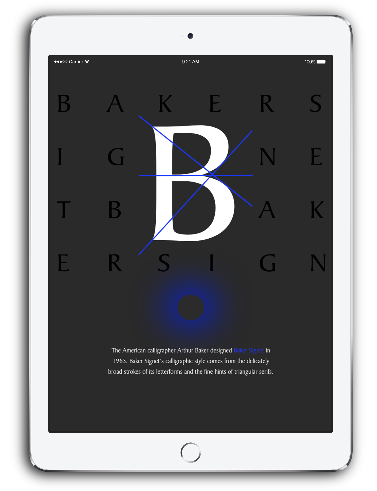
inspire This dance company’s font sings to me. It feels like a dancer — ethereal and fluid. I honored this font in this first website that I built from scratch.
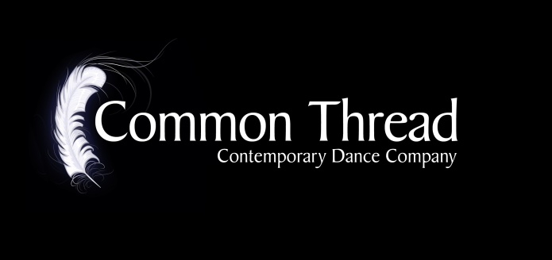
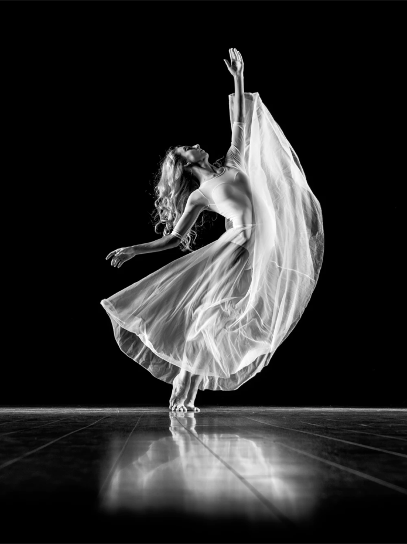
unearth I found the font on Adobe Fonts.
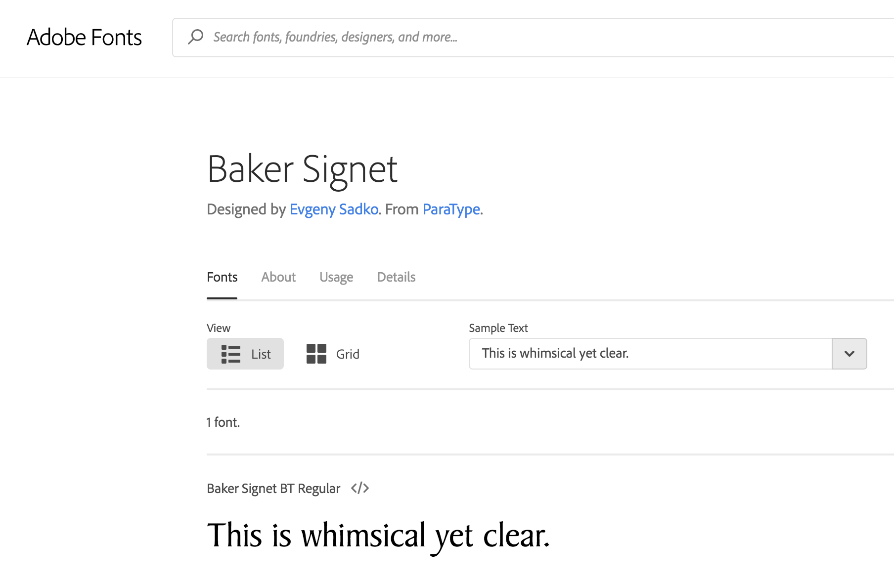
sketch I brainstormed how best to tell its story.
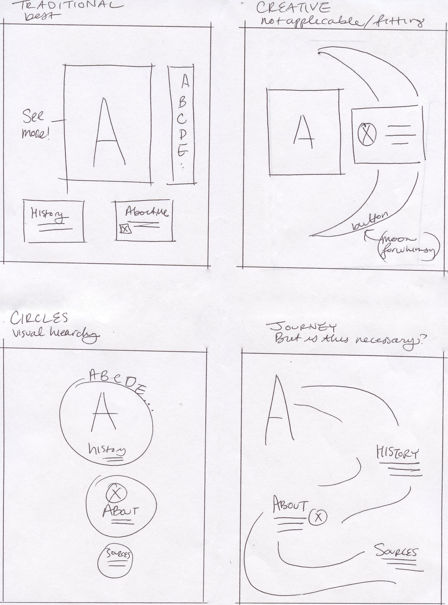
theme Once I researched the history of Baker Signet and found that it was a calligraphic font, I decided to stick to the traditional layout for an old fashioned ink-blot & paper theme.
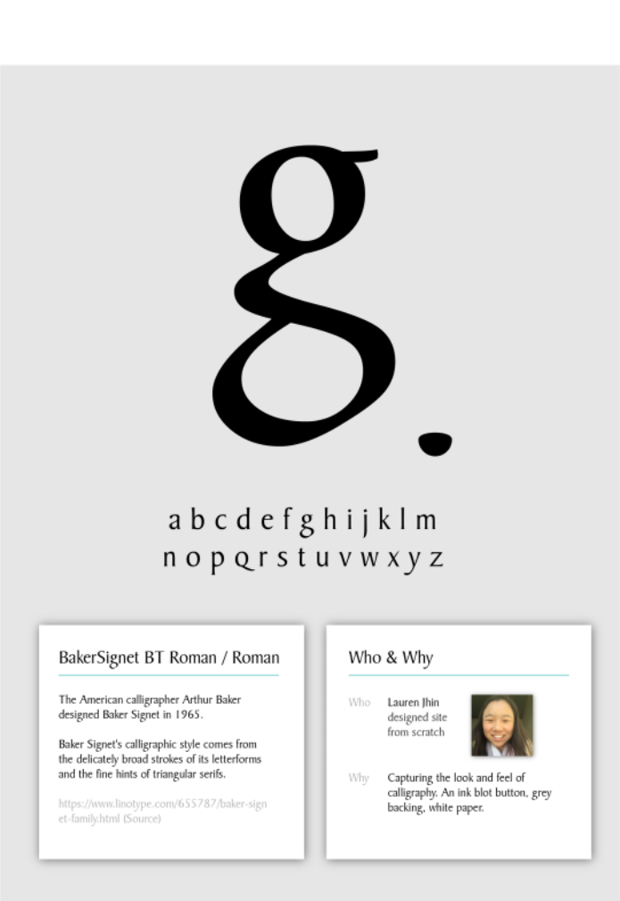
revision The design felt stiff. What if I kept the ink theme, but “dipped” the whole page in ink?
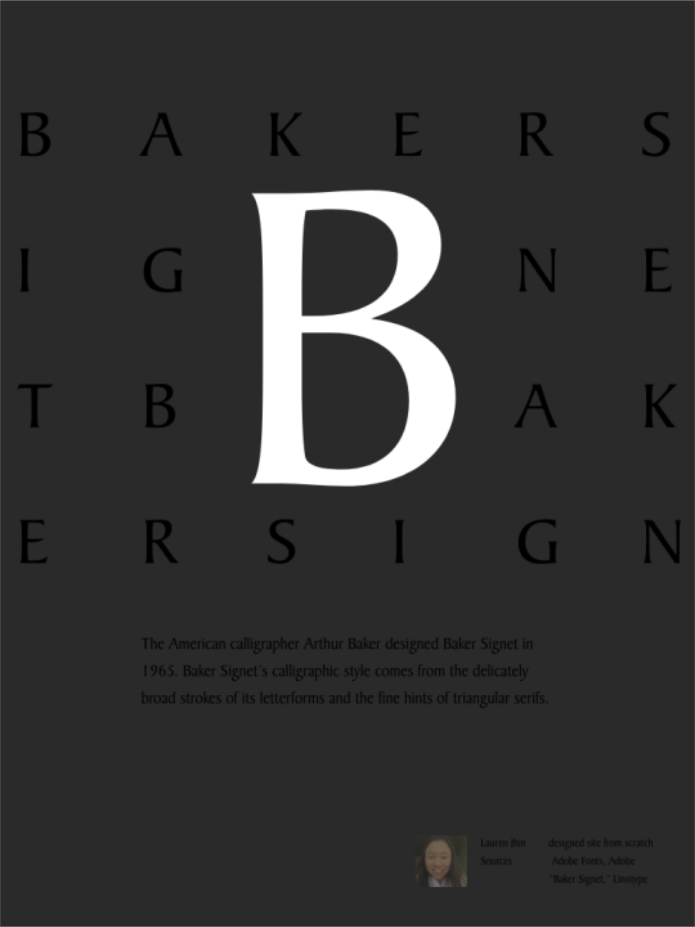
analyze Pleased, I began drawing mathematical analyses of the letter. What symmetries could I call out? What angles could I emphasize?
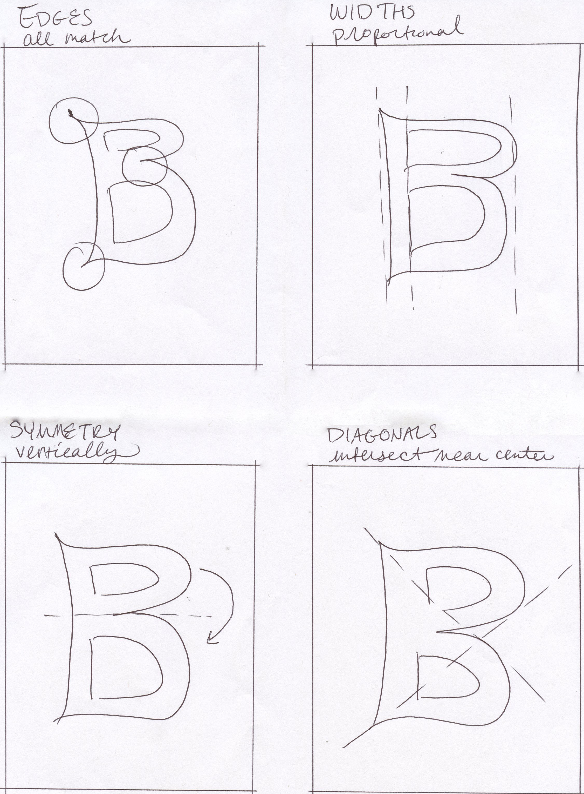
discover Trying the B in illustrator, I realized the angles coming out of the B met perfectly on the other side.
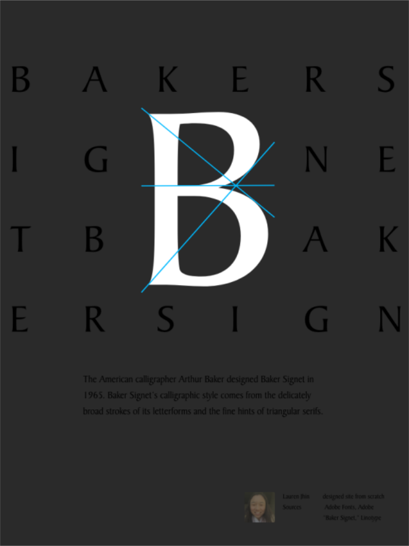
persevere Once I realized I would need to code the background letters to surround the big B perfectly, I wistfully thought it would be nice to screenshot my mock-up above and paste it into my site. “No,” I thought, “Buckle down and learn HTML/CSS.”
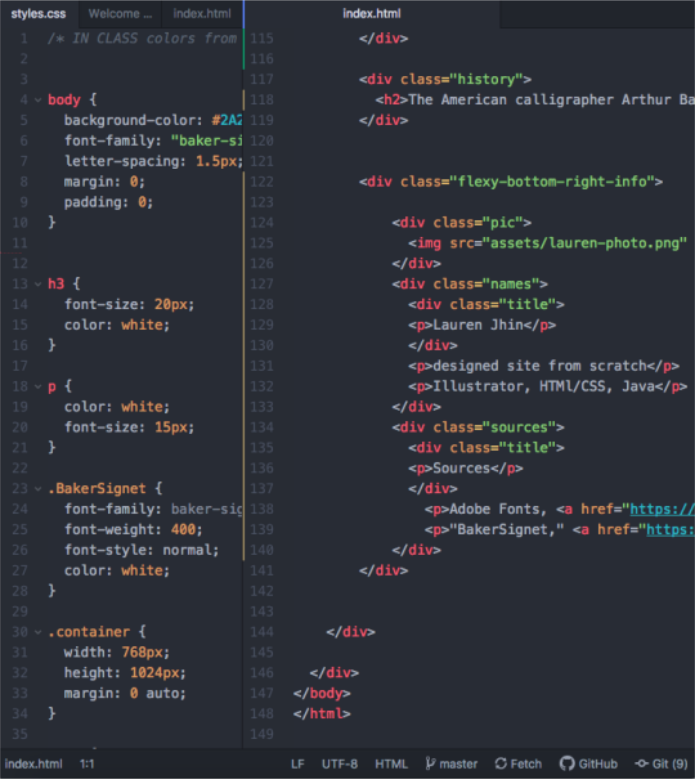
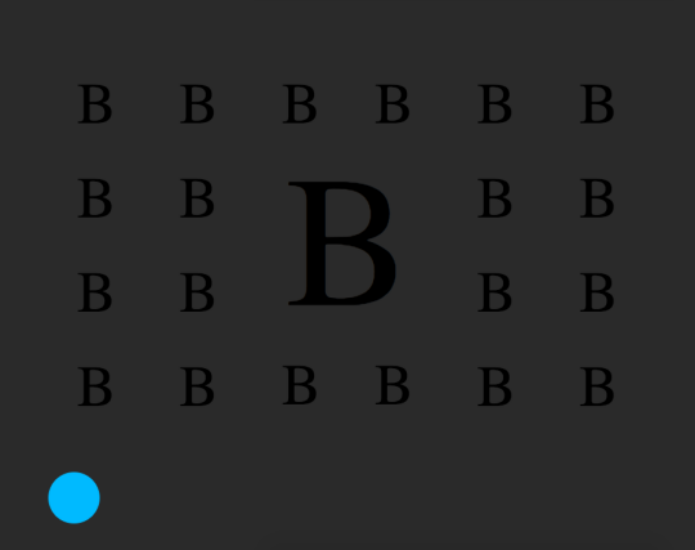
final After conducting user testing, I received feedback that the button was not enticing enough to click on. I added a button glow, and by accident deleted the middle fill color. I gaped. It looked like an eclipse! Thrilled by the sci-fi look, I turned the colors deep blue to match what earth looks like from space.